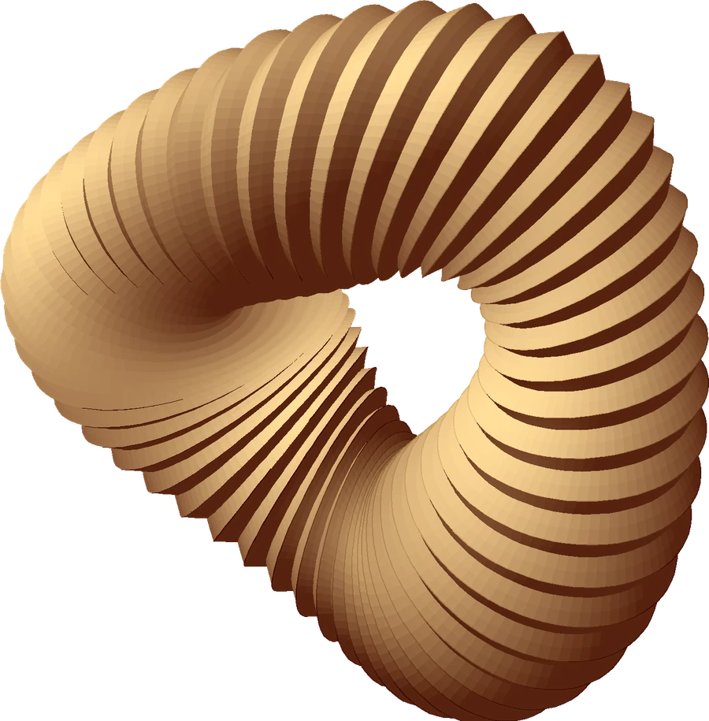

Mix a four-color palette.
Open to opportunities
Umme Saima
Jerin.
Creative developer / Interface designer and visual explorer
I turn curious ideas into thoughtful websites and playful digital experiences. Based in Bangladesh.
++

X / Y / ZSTUDIO EXPERIMENT Nº 01Fold study
Scroll to explorePORTFOLIO / 2026
Creative developmentInterface designVisual experiments
01 / ABOUT
A little about me.
I’m Saima, also known as Choto Afa. I like the point where design becomes something you can click, move and explore.
My practice brings together front-end development, interface design and visual experiments. This portfolio is my space to try an idea and see how it feels in the browser.
01Responsive web design
02Front-end development
03Interaction design
02 / PROJECT INDEX
Selected work.
Explore form through rotation.
03 / FAQ
A few answers.
What kind of work do you enjoy?
I enjoy building responsive websites and exploring the small details of an interface, from typography to the way a button feels.
Can I try the projects?
Yes. Open a study in Selected work and choose Live demo. Each experiment runs in your browser.
Where can I find your CV?
Use Download CV in the introduction to save a one-page PDF.
How can I get in touch?
Use the contact form to prepare an email, or open Connect to explore the social channels.
04 / CONTACT
Let’s make
something.
Have a project or a question? I’d love to hear it.